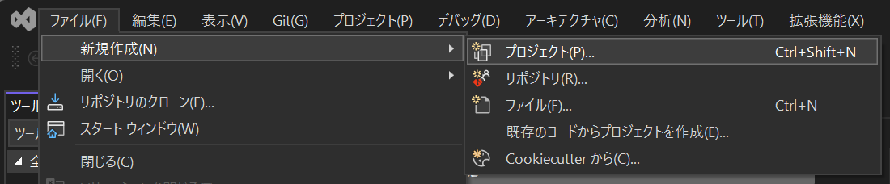

こんにちは、Japan Developer Support Core チームの松井です。今回は、Visual Studio 2022 と GitHub Copilot を使用してアプリケーションを作成する方法についてチュートリアル形式で紹介します。GitHub Copilot を使用すると曖昧な要件からでもアプリケーションのコードを自動生成でき、フィードバックを与えながら開発を進めることができます。本記事で GitHub Copilot を使用したアプリケーション開発の流れを体験してみていただけると幸いです。
前提条件
本記事の手順を試すには以下の準備が必要です。
- Visual Studio 2022 version 17.14 以降のインストール
- GitHub Copilot のインストール
- エージェント モードの有効化
シナリオ
私事ですが、今年小学一年生になった私の子どもは算数が苦手で、5+4 のように片手で数えられる数字同士の足し算であれば時々間違えつつも何とか計算できるものの、6+4 のようにそれ以上の数字の足し算がうまくできません。そこで、子どもが足し算を学ぶための簡単なアプリケーションをWPFで作成してみます。
チュートリアル
1. プロジェクトの作成
Visual Studio 2022 を起動し、メニューから [ファイル] - [新規作成] - [プロジェクト] を選択します。

プロジェクトのテンプレートとして「WPF アプリ (.NET Framework)」を選択します。
プロジェクト名を [たしざんのれんしゅう] として [作成] ボタンをクリックしてプロジェクトを作成します。
2. エージェント モードでアプリを実装する
メニューから [表示] - [GitHub Copilot チャット] を選択して GitHub Copilot チャットを開き、モードを [エージェント] に変更します。
GitHub Copilot チャットに作成したいアプリの要件を伝えます。GitHub Copilot は自然言語で要件を理解できますので、人に伝えるように要件を入力して構いません。背景なども含めて、以下のように指示してみましょう。
私の子どもは足し算が苦手なので、克服させるために足し算を練習するためのWPFアプリを作成したいです。ランダムな1桁の数字同士の足し算を出題して、答えを0～18のボタンで選択させるアプリを作成してください。子どもの数についての理解を助けるために何か表示の工夫があるとうれしいです。
GitHub Copilot が要件を理解し、アプリケーションのコードを生成します。生成されたコードを確認し、必要に応じて修正を加えます。修正が必要なければ [送信] ボタンをクリックして生成されたコードを反映します。
メニューから [デバッグ] - [デバッグなしで開始] を選択してアプリケーションを実行してみましょう。
ほぼC#やWPFの知識がなくても、GitHub Copilot が要件に基づいてアプリケーションのコードを生成してくれます。実行すると、ランダムな1桁の足し算問題が出題され、答えを0～18のボタンから選択できるようになっています。GitHub Copilot に与えた指示に対する応答は以下のとおりで、あいまいに伝えた「理解を助ける工夫」への提案や、子どもが使用するアプリを考慮して大きな文字を採用するなどの配慮もされていることが分かります。
素晴らしいアイデアです！
ご要望を整理すると、以下の機能が必要です。
- ランダムな1桁の足し算問題（例：3 + 5）を出題
- 答えを0～18のボタンで選択
- 子どもの数の理解を助ける工夫（例：数字の下に●を並べて数を可視化）
まずはUI（MainWindow.xaml）に以下の要素を追加します：
- 問題表示用のTextBlock
- 数字の可視化用のStackPanel（●を並べる）
- 答え選択用のボタン（0～18）
次に、MainWindow.xaml.csでロジック（問題生成、答え判定、UI更新）を実装します。
まずはUI部分（MainWindow.xaml）から着手します。
その後、C#側のロジックを実装します。 UI（MainWindow.xaml）に以下を追加します：
- 問題表示用TextBlock（例：「3 + 5 = ?」）
- 2つの数字を可視化するStackPanel（●を並べる）を2つ
- 答え選択用のUniformGrid（0～18のボタンを自動配置）
これにより、子どもが数を視覚的に理解しやすくなります。
次に、MainWindow.xamlにこれらの要素を追加します。 次に、MainWindow.xaml.csに以下のロジックを実装します。
- ランダムな1桁の足し算問題を生成
- 問題と●の表示を更新
- 0～18の答えボタンを生成し、クリック時に正誤判定
- 正解・不正解時のフィードバックと次の問題出題
これにより、UIとロジックが連動し、子どもが楽しく足し算を練習できます。 足し算練習アプリのUIとロジックを実装しました。
- ランダムな1桁の足し算問題を出題し、数字ごとに●で数を可視化します。
- 答えを0～18のボタンから選択でき、正誤判定とフィードバックも表示されます。
ビルドも成功していますので、すぐにご利用いただけます。
3. アプリケーションの改善
アプリケーションを実行してみると、子どもが足し算の練習をするには十分な機能が実装されています。しかし改善して欲しい点がいくつかあったため、GitHub Copilot に改善の指示を出してみましょう。ここで与えてみた指示は以下の通りです。
数が多くなると丸印が横並びになって分かりにくく、色も単調で飽きてしまいそうです。また、結果をダイアログに表示すると子どもが操作し辛いです。ボタンが小さく押しづらいことも気になります。
あいまいな要件に応じて作成したアプリに対して要件になかったことを追加であれこれ言われると人間であれば嫌になってしまいそうですが、GitHub Copilot は柔軟に何度でも対応してくれます。
ご要望に応じて、以下の改善を行います。
- 丸印（●）を「折り返し表示」し、数が多くても見やすくします（例：5個ごとに改行）。
- 丸印の色をランダムまたは交互にして、見た目を楽しくします。
- 正解・不正解の結果は画面上に大きく表示し、ダイアログは使いません。
- 答えボタンを大きくし、押しやすくします。
これらを反映するため、MainWindow.xamlとMainWindow.xaml.csを修正します。
まずは、UI（MainWindow.xaml）に「結果表示用TextBlock」とボタンのサイズ指定を追加します。
次に、C#側で丸印の折り返し・色付け・結果表示のロジックを実装します。 次に、MainWindow.xaml.csを以下のように修正します。
- 丸印（●）を5個ごとに折り返してWrapPanelで表示し、色も交互またはカラフルにします。
- 正解・不正解の結果はResultTextに大きく表示し、ダイアログは使いません。
- 答えボタンのサイズを大きくします。
これにより、見やすく楽しいUIと、子どもが操作しやすい体験になります。 ご要望に合わせて以下の改善を行いました。
- 丸印（●）は折り返し表示＆カラフルな色で楽しく見やすくしました。
- 正解・不正解の結果は画面中央に大きく表示し、ダイアログは使いません。
- 答えボタンを大きく押しやすくしました。
ビルドも成功していますので、すぐにご利用いただけます。
改善後のアプリは以下のようになりました。
他にも「結果を表示する時間を長くしてください」、「どうしても答えが分からない場合にヒントを出す機能が欲しいです」、「丸印の表示と非表示を切り替えられるようにしてください」など、要件を追加していくことでアプリケーションを改善していくことができます。
まとめ
GitHub Copilot を活用することでアプリケーションの開発を迅速に進めることができます。今回のチュートリアルでは、GitHub Copilot を使用して簡単な足し算練習アプリケーションを作成しました。自分でコーディングするとそれなりの時間がかかると思いますが、GitHub Copilot を使用すると数分で動作するものが出来上がります。ちょっとしたアプリを作りたい場合も、複雑な業務アプリケーションを作成する場合も、GitHub Copilot を活用することで開発の効率化が図れます。
GitHub Copilot はあくまで提案を行う AI であり、生成されたコードが正しく動作するかどうかは開発者が確認する必要がありますが、提案を参考にすることで開発者はより迅速に問題を解決できる可能性があります。本記事が皆さんのアプリケーション開発に役立つことを願っています。GitHub Copilot を使って、より良い開発体験をお楽しみください！
本ブログの内容は弊社の公式見解として保証されるものではなく、開発・運用時の参考情報としてご活用いただくことを目的としています。もし公式な見解が必要な場合は、弊社ドキュメント (https://learn.microsoft.com や https://support.microsoft.com) をご参照いただくか、もしくは私共サポートまでお問い合わせください。